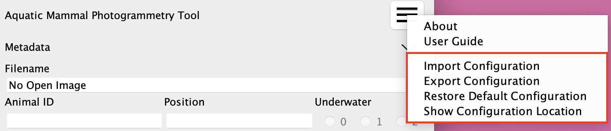

Configuration Options
Menu Items

Import Configuration
Import configuration files from either a directory or a zip file. The full list of configuration files must be present: CSV-Columns.csv, CueConfig.json, MeasurementConf.json, and ReferenceConf.json. JSON configuration files must be valid according to their defined JSON schema ( see Cue and Calculation Configuration for details).
Current configuration files will be backed up. Backups will be located in the configuration directory with a timestamped filename and a .bak extension.
Following an import, ImageJ must be restarted for the configuration changes to take effect.
Export Configuration
Export configuration files to a zip file. The zip file will contain the full list of configuration files: CSV-Columns.csv, CueConfig.json, MeasurementConf.json, and ReferenceConf.json.
Restore Default Configuration
Restore configuration files to the default state that comes bundled with the plugin.
Current configuration files will be backed up. Backups will be located in the configuration directory with a timestamped filename and a .bak extension.
Following a restore, ImageJ must be restarted for the configuration changes to take effect.
Show Configuration Location
Display the directory location of configuration files on the file system.